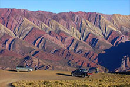

Serranías del Hornocal
se debe transitar 24 km de ripio por la Ruta provincial 73.
La Serranía del Hornocal es una formación geológica que se destaca por sus diferentes tonalidades de colores. Por este motivo se la conoce también como el Cerro de los 14 Colores. Para poder disfrutar del paisaje y de las hermosas visitas de la serranía se demarcó un sector como mirador a 4.350 metros de altura. Al mirador se llega en vehículo y desde este punto se obtiene las mejores vistas panorámicas. Otro atractivo es la ruta para llegar hasta el mirador que recorre paisajes de ambientes puneños.
Como llegar a la Serranía del Hornocal
El camino parte desde la localidad de Humahuaca, desde este pueblo hay que tomar la Ruta Provincial 73 (ripio) y recorrer 24 kilómetros hasta el mirador.
Excursiones y tours: en el pueblo de Humahuaca hay agencias de viajes y camionetas que ofrecen el paseo hasta el mirador. Duración aprox.: medio día.
Importante: el mejor momento del día para visitar la Serranía del Hornocal (El cerro de los 14 colores) es por la tarde ya que el sol de ese momento del día resalta sus diferentes colores.